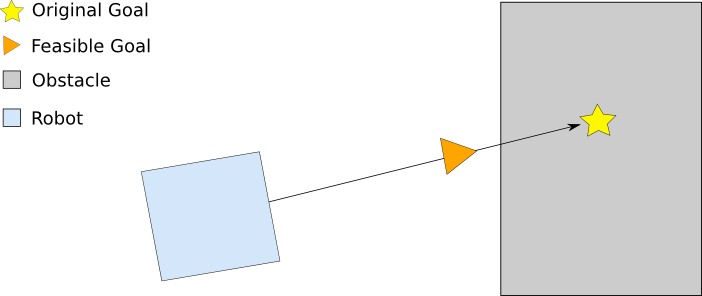

目次
このプランナーは、ロボットが従うために”ニンジン”を置くための適切な場所(Feasible Goal)を検索します。これは、ロボット(Robot)と目標位置(Original Goal)の間のベクトルに沿って後退しながら行います。
carrot_planner :: CarrotPlannerは、 nav_core パッケージに含まれるnav_core :: BaseGlobalPlannerインターフェイスに準拠したシンプルなグローバルプランナーであり、move_base ノードのグローバルプランナー プラグイン として使用できます。 Carrot Plannerは、現在位置(Robot)と目標位置(Original Goal)を受け取り、その間のベクトル上に障害物があるかどうかを判断します。障害物がある場合は、目標位置(Original Goal)からベクトルに沿って現在位置(Robot)側に後退して判断し、障害物がない地点(Feasible Goal)が見つかるまで繰り返します。この地点を次の目標位置としてローカルプランナーまたはコントローラーに渡します。 このようにして、Carrot Plannerは、ロボットがユーザー指定の目標地点(Original Goal)に可能な限り近づけることができます。
出典：http://wiki.ros.org/carrot_planner
carrot_planner :: CarrotPlannerオブジェクトは、その機能を C ++ ROSラッパー として公開します。 これは、初期化時に指定されたROS名前空間（以降、nameとする）内で動作します。 nav_core パッケージにあるnav_core :: BaseGlobalPlannerインターフェイスに準拠しています。
carrot_planner :: CarrotPlannerオブジェクトの作成例:
1 #include <tf/transform_listener.h>
2 #include <costmap_2d/costmap_2d_ros.h>
3 #include <carrot_planner/carrot_planner.h>
4
5 ...
6 tf::TransformListener tf(ros::Duration(10));
7 costmap_2d::Costmap2DROS costmap("my_costmap", tf);
8
9 carrot_planner::CarrotPlanner cp;
10 cp.initialize("my_carrot_planner", &costmap);
| パラメータ名 | 内容 | 型 | 単位 | デフォルト |
|---|---|---|---|---|
| ~<name>/step_size | ローカルプランナーの適切な場所を見つけようとするときに、ロボットと目標位置の間のベクトルに沿って後退する距離間隔。 | double | m | 関連するコストマップの解像度 |
| ~<name>/min_dist_from_robot | ローカルプランナーに送信されるロボットから目標地点までの最短距離。 | double | m | 0.10 |
C ++のcarrot_planner :: CarrotPlannerクラスは、nav_core パッケージにあるnav_core :: BaseGlobalPlannerインターフェイスに準拠しています。 詳細については、Carrot Plannerのドキュメント をご覧ください。
{kind=link}